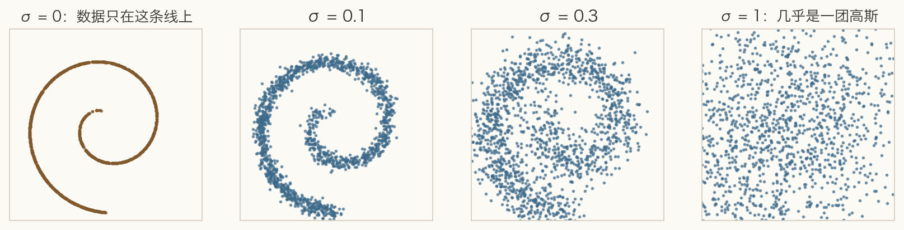
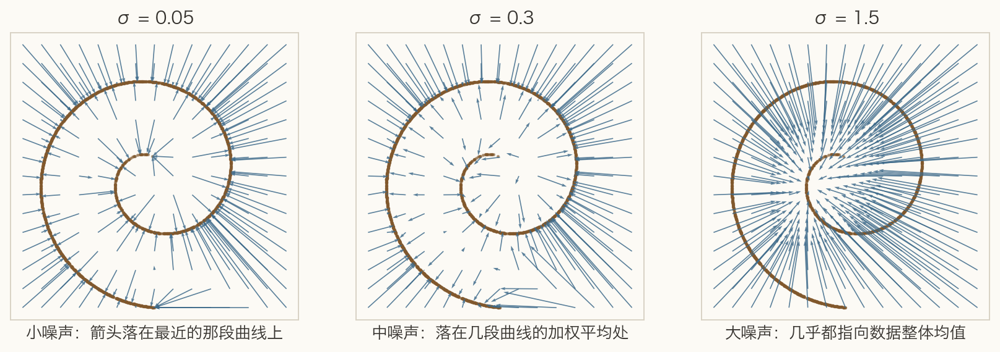
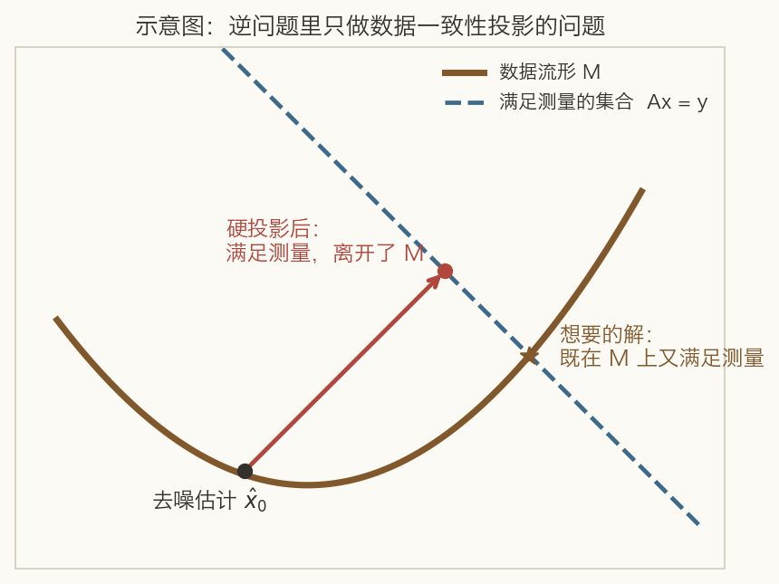

扩散模型里的「流形」：数据为什么挤在一条细线上，score 为什么指回去
读扩散模型的论文，「数据流形」「离开流形」「把样本拉回流形」这类说法几乎每篇都有。有人叫它「空间流形」，指的是同一件事：真实数据在高维空间里只占一块很薄的低维区域。本文用几张二维/三维小图把这个概念和扩散模型的训练、采样、逆问题串起来。
一句话版本：
加噪把这块薄区域摊厚；网络学到的 score 在每个噪声尺度上告诉你「往哪走更像数据」；噪声小的时候，这个方向主要垂直于流形、指回流形。采样就是从很厚走到很薄，一步步落回流形。
1. 流形是什么：维度很多，有效方向很少
一张 64×64 的灰度图是 4096 维空间里的一个点。但「看起来像真实图片」的点，只占这个空间里极小的一部分。
下面这个例子把问题压到最简单：同一个字形，只做旋转。180 张图，每张都是 4096 维向量，但它们只由**一个参数（角度）**决定。

- 左上：转动角度，图片沿着一条曲线连续移动。这就是「沿流形走」。
- 右侧：把 180 张图用 PCA 投影到前 3 个主成分（约占总方差 69%），它们连成一条闭合曲线。4096 维的空间里，数据只住在一条一维的线上。
- 左下：0° 和 90° 两张图的像素平均，是一个「叠影」，任何角度都转不出来，它落在曲线外面（红叉）。加了高斯噪声的图同样不在曲线上。
这就是流形假设（manifold hypothesis）：真实数据集中在高维空间中的低维结构附近。人脸、MRI 切片、自然图像都是这样，只是它们的「内在维度」远大于 1，形状也复杂得多。它是一个好用的建模假设，不是说所有图像都严格落在一张光滑曲面上。
两条直接推论：
- 在像素空间里做线性操作（平均、插值、加噪），通常会离开流形。
- 如果数据严格在低维流形上，它在整个空间里没有通常意义的概率密度。 密度没有定义，
也没有定义。Song & Ermon（NCSN, NeurIPS 2019）正是用这一点解释为什么直接对干净数据做 score matching 会失败。
2. 为什么要加噪：把细线摊成厚带
扩散模型的前向过程是

：数据只在线上，线外密度为零，线上密度在二维里是无穷大。 ：细线变成一条有厚度的带，带内每个点都有正常的、光滑的密度。 ：结构几乎看不出来，接近一团高斯。
加噪带来两个好处：
- 密度和 score 有了定义：
处处光滑，score 可以学。 - 远离数据的地方也有训练信号：score matching 的损失按
加权，低密度区的误差几乎不被惩罚。大噪声把样本撒到这些区域，采样起点（纯噪声）附近的 score 才学得准。这是 Yang Song 博客里讲的核心动机。
只用一个噪声尺度不够：小噪声信息保真但覆盖不到远处，大噪声覆盖广但把结构抹掉了。所以扩散模型同时学一整串噪声尺度。
3. score 和去噪器：几何上在做什么
3.1 Tweedie 公式：score = 「去噪方向」
对加性高斯噪声有一个精确关系：
左边是「看到带噪的
下图里的箭头从每个网格点

：箭头几乎都落在最近的那段螺旋上。去噪 ≈ 投影到流形。 ：一个点可能来自相邻的两圈螺旋，后验平均落在两圈之间，箭头开始「犹豫」。 ：所有点都分不清来源，箭头都指向数据整体均值附近。
注意中间和右边：后验平均本身可以不在流形上。这也是为什么一步去噪会糊、而扩散要一步步走。
3.2 小噪声下 score 主要垂直于流形
把流形换成最简单的直线（横轴），数据沿横轴服从标准正态。加噪后，点

法向分量带
弯曲的流形在局部也是这样。Stanczuk 等（ICML 2024）证明：噪声趋于零时，score 指向流形，扩散模型在低噪声下近似了流形的法丛（normal bundle）；数一数 score 张成多少个方向，就能估出流形的内在维度。
4. 反向采样：从厚到薄，落回流形
反向过程从大

400 个起点全部落回螺旋，终点到最近训练点距离的中位数约 0.008（螺旋半径约 1.9）。轨迹的形状对应第 3 节的三个阶段：先朝整体均值收拢，再挑选落在哪一圈，最后沿法向贴上流形。
Permenter & Yuan（ICML 2024）把这个过程解释成对流形的近似投影：去噪器近似「到数据集距离函数」的平滑梯度，采样就是逐步减小到数据集的距离，平滑程度由
有一点要说清楚：图里用的是训练集的精确经验 score，所以生成结果几乎就是训练点本身，这是「记忆」而不是「泛化」。真实网络学不到这么精确的经验 score，它在训练点之间插值出了一个连续的流形，才能生成训练集里没有的样本。Kadkhodaie 等（ICLR 2024）专门讨论了网络这种归纳偏置从哪里来。
5. 逆问题里的「走出流形」
用扩散模型做 MRI、CT 重建或图像修复时，每一步除了去噪，还要让结果满足测量

（示意图，非计算结果。）
去噪估计
这正是几篇代表方法的出发点：
- MCG（Chung 等，NeurIPS 2022）指出投影式数据一致性会把采样路径「甩出数据流形」，加一个流形约束的梯度修正项让迭代留在流形附近。
- DPS（Chung 等，ICLR 2023）不做硬投影：把测量误差
算在去噪估计上，再经过去噪网络对当前带噪样本 求梯度，用这个梯度轻推样本。它能处理带噪和非线性测量。 - MPGD（He 等，ICLR 2024）直接在去噪估计
（或它的潜变量）上走一步引导梯度，再进入下一步采样，省掉反传整个去噪网络；配合预训练自编码器或潜空间扩散，让这一步更新留在流形上。
如果你读过扩散模型测试时适配叙事指南，里面「测量适配」那条主线的很多论文，都是在回答「怎样既满足测量、又不离开流形」。
6. 几个常见误解
| 说法 | 更准确的版本 |
|---|---|
| score 指向最近的训练样本 | 指向后验平均；只在噪声很小、投影唯一时近似「最近点」 |
| 去噪结果一定在流形上 | 噪声大时后验平均可以落在流形外（图 3 中、右） |
| 扩散模型只学到了流形的形状 | 法向分量编码形状，切向分量编码流形上的密度，两者都学 |
| 加噪是为了让任务变难、训练更鲁棒 | 加噪是为了让 score 有定义、在低密度区也能学准 |
| 流形假设说图像严格在一张光滑曲面上 | 只是说数据集中在低维结构附近，是建模假设 |
图是怎么做的
六张图都由一个约 190 行的 NumPy/Matplotlib 脚本生成（make_figs.py，python3 make_figs.py 输出目录），不依赖训练好的网络：
- 图 1：一个 64×64 字形旋转 180 次后做 SVD，取前 3 个主成分。
- 图 2–3、5：2000 个螺旋点作为经验分布，
用精确的高斯核加权平均计算。 - 图 4：直线流形 + 标准正态，score 用解析式。
- 图 6：手画的示意图，几何关系是对的，数值没有含义。
参考
- Yang Song. Generative Modeling by Estimating Gradients of the Data Distribution（博客，2021）：低密度区 score 不准、多尺度加噪的动机。
- Song & Ermon. Generative Modeling by Estimating Gradients of the Data Distribution（NeurIPS 2019）：流形假设下 score 无定义的讨论。
- Chenyang Yuan. Diffusion models from scratch, from a new theoretical perspective（博客）及 Permenter & Yuan, Interpreting and Improving Diffusion Models from an Optimization Perspective（ICML 2024）：去噪即近似投影。
- Stanczuk et al. Diffusion Models Encode the Intrinsic Dimension of Data Manifolds（ICML 2024）：低噪声 score 近似法丛。
- Chen et al. Score Approximation, Estimation and Distribution Recovery of Diffusion Models on Low-Dimensional Data（ICML 2023）：低维数据上 score 的分解与估计理论。
- Chung et al. Improving Diffusion Models for Inverse Problems using Manifold Constraints（MCG, NeurIPS 2022）。
- Chung et al. Diffusion Posterior Sampling for General Noisy Inverse Problems（DPS, ICLR 2023）。
- He et al. Manifold Preserving Guided Diffusion（ICLR 2024）。
- Kadkhodaie et al. Generalization in Diffusion Models Arises from Geometry-Adaptive Harmonic Representations（ICLR 2024）。